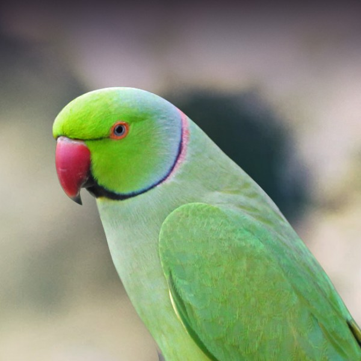

|  |
In the types of pet birds, a parrot is one. The scientific name of the parrot is Psittaciformes.
They belong to a family of Psittacopasserae. These are mostly found in subtropical and tropical regions. There
are about 372 species in existence in 86 general. Their size ranges from 3.5 to 40 inches and a mass of about
2.25 to 56 ounces. These birds live in groups called flocks, and each congregation contains about 20-30 birds.
They are omnivores, meaning; they eat nuts, fruit, and insects, etc. The clutches of parrot contain only two
eggs, and the incubation period is about 18-30 days. A newborn parrot is blind for the first two weeks. A chick
becomes fully mature only by 1- 4 years, depending on species. The lifespan of a parrot varies from 50- 95 years.
|